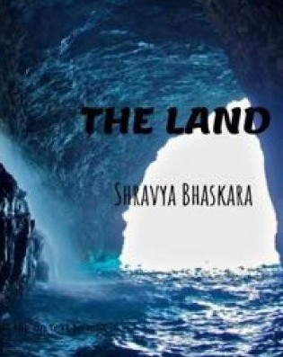

Poet: Shravya Bhaskara
No stir in the air, no stir in the sea,
The ship was still as she could be,
She was huge and made of iron and wood,
Carrying atleast two-a-thousand as she could.
The sun in the heaven was shining bright,
The captain said, "Take a bite,
We shall make it to the Land,
Let the ship sing its band."
Two-a-hundered men as they sang,
The ship roared over the sea with its gang.
All the men young and old joined,
The gods in the heaven were too overjoyed.
There was such music in the air,
That none had known of despair.
Little had they known the perils at sea,
As each of them drank their tea.
But Khronos was cruel as he could be,
He let them sing and admire the sea.
The bright day turned hazy and dark,
And the sound was nothing like a lark.
In the middle of the sea as they were,
The huge storm came over.
Each wave twice as big,
Came down with force upon the brig.
The men were like ants,
Shouting now and then "We can't".
But the sea wouldn't hear, it was too strong,
And the rocks underneath awaited the throng.
As the ship hit a rock,
The deck shook, and out fell the stock.
With the stock fell the man,
Each of them held on to a piece of wood,
Like it was the last of their livelihood.
They swam for the land,
Lettng out each other a hand.
The ship was now sunk to the brim,
If only they knew in which direction to swim.
Two-a-hundered at once she swallowed,
Leaving but a girl, neither too young nor too old.
She held onto a piece of wood,
Crying out for help as loud as she could.
The wood floated with the waves,
And so she found her way to the caves.
In the caves, she found a family at last,
Each of them had the same past.
They took her in at once as they knew,
The pain and suffering of loneliness was nothing new.